Colour vs fill
aesthetic
Fill and colour scales in ggplot2 can use the same palettes. Some
shapes such as lines only accept the colour aesthetic,
while others, such as polygons, accept both colour and
fill aesthetics. In the latter case, the
colour refers to the border of the shape, and the
fill to the interior.
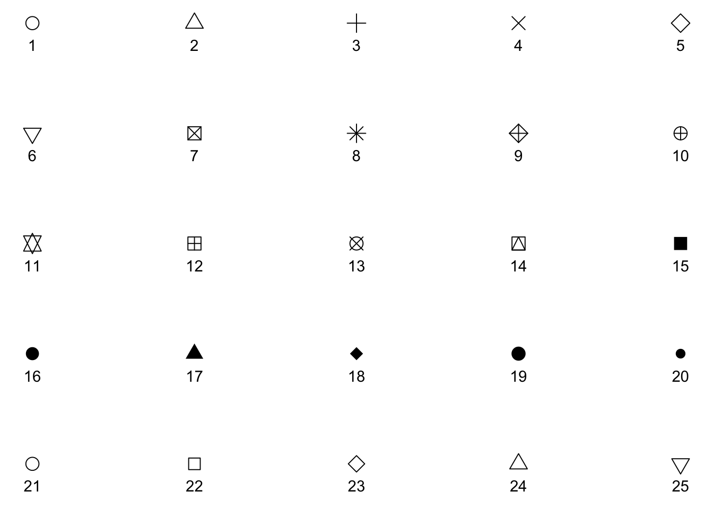
All symbols have a foreground colour, so if we add
color = "navy", they all are affected.
s + geom_point(aes(shape = z), size = 4, colour = "navy")
While all symbols have a foreground colour, symbols 21-25 also take a
background colour (fill). So if we add fill = "orchid",
only the last row of symbols are affected.
s + geom_point(aes(shape = z), size = 4, colour = "navy", fill = "orchid")
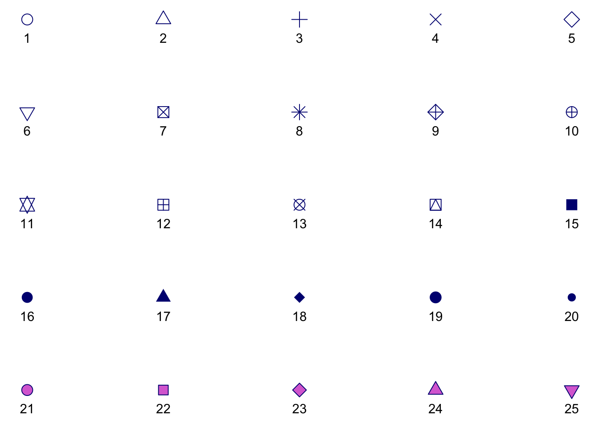
This is why it is so common to have issues with color
and fill and geom_point(), by the way!
Data
For the rest of today, we’ll play with the sounds
dataset. This data was derived from the R package wordbankr,
an R interface to access Wordbank- an open source
database of children’s vocabulary development. The tool used to measure
children’s language and communicative development in this database is
the MacArthur-Bates Communicative
Development Inventories (MB-CDI). The MD-CDI is a parent-reported
questionnaire.
Here is a glimpse of the data:
glimpse(sounds)
Rows: 33
Columns: 7
$ age <dbl> 8, 8, 8, 9, 9, 9, 10, 10, 10, 11, 11, 11, 12, 12, 12, …
$ sound <chr> "cockadoodledoo", "meow", "woof woof", "cockadoodledoo…
$ kids_produce <dbl> 1, 0, 3, 0, 2, 2, 0, 5, 4, 0, 5, 12, 0, 12, 28, 9, 125…
$ kids_understand <dbl> 3, 10, 12, 2, 21, 22, 9, 41, 40, 4, 36, 32, 16, 59, 59…
$ kids_respond <dbl> 35, 35, 35, 91, 93, 93, 139, 145, 143, 94, 94, 94, 141…
$ prop_produce <dbl> 0.02857143, 0.00000000, 0.08571429, 0.00000000, 0.0215…
$ prop_understand <dbl> 0.08571429, 0.28571429, 0.34285714, 0.02197802, 0.2258…
Note that the unit of observation here is
one-row-per-age-group/animal sound.
Variables you need for this lab:
age: child age in monthssound: a string describing a type of animal soundkids_produce: the number of parents who answered “yes,
my child produces this animal sound” (note that if the child produces a
sound it is assumed that they understand it as well)kids_respond: the number of parents who responded to
this question at allprop_produce: the proportion of kids whose parents
endorsed that their child produces this animal sound, out of all
questionnaires administered (i.e.,
kids_produce / kids_respond)
Other variables in this dataset:
kids_understand: the number of parents who answered
“yes, my child understands what this animal sound means” (note that a
child can understand the sound but not produce it)prop_understand: the proportion of kids whose parents
endorsed that their child understands this animal sound, out of all
questionnaires administered (i.e.,
kids_understand / kids_respond)
Know your data
Challenge #1:
How many variables?
- Which variables are continuous?
- Which ones are categorical or ordinal?
How many total kids do we have data for?
How many ages (in months)?
How many types of animal sounds? What are they?
Let’s start just by getting a feel for how many kids produce each
kind of sound, across the full age range. We could make a table:
sounds %>%
group_by(sound) %>%
summarize(total_produce = sum(kids_produce)) %>%
knitr::kable()
| cockadoodledoo |
148 |
| meow |
681 |
| woof woof |
940 |
Or we could make a simple bar plot:
ggplot(sounds, aes(x = sound, y = kids_produce)) +
geom_col() +
labs(x = "Sound", y = "Total Children Producing")
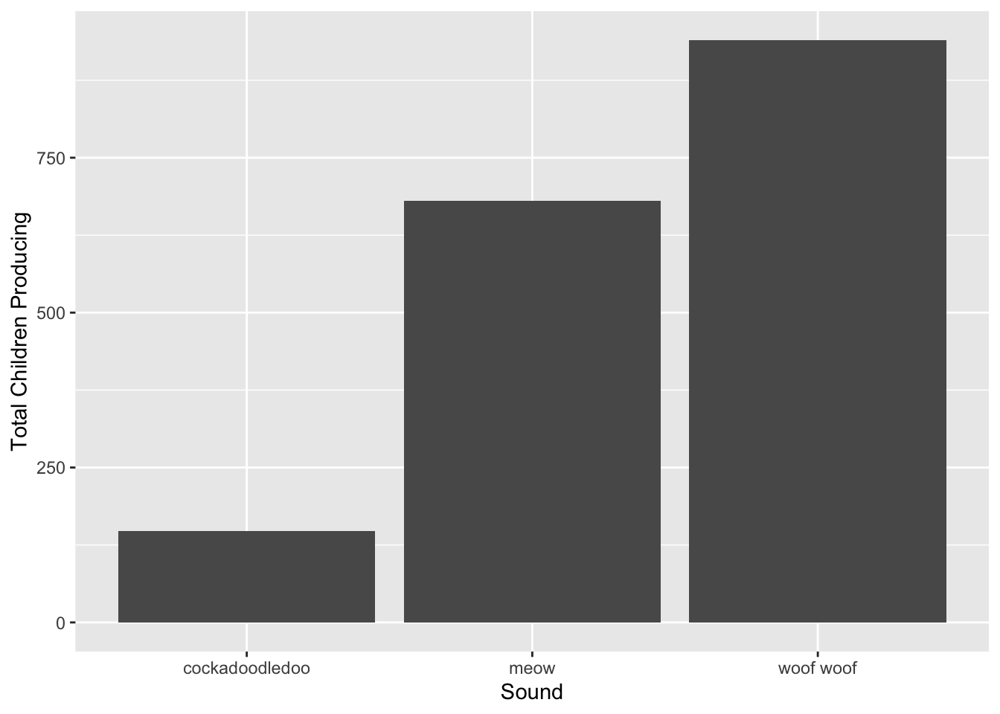
For this kind of plot, we don’t really need color. What if we want to
see how the number of kids who produce each sound varies by age? We’ll
change the x-axis to age and instead facet_wrap by
sound, and make the y-axis a proportion instead of
counts.
ggplot(sounds, aes(x = age, y = prop_produce)) +
geom_col() +
labs(x = "Age (mos)", y = "Proportion of Children Producing") +
facet_wrap(~sound)
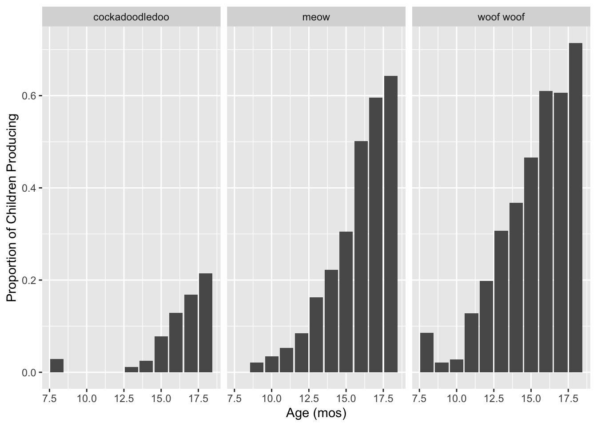
The bar geom makes this a little hard to read and compare across
facets though. Let’s try points instead.
ggplot(sounds, aes(x = age, y = prop_produce)) +
geom_point() +
labs(x = "Age (mos)", y = "Proportion of Children Producing") +
facet_wrap(~sound)
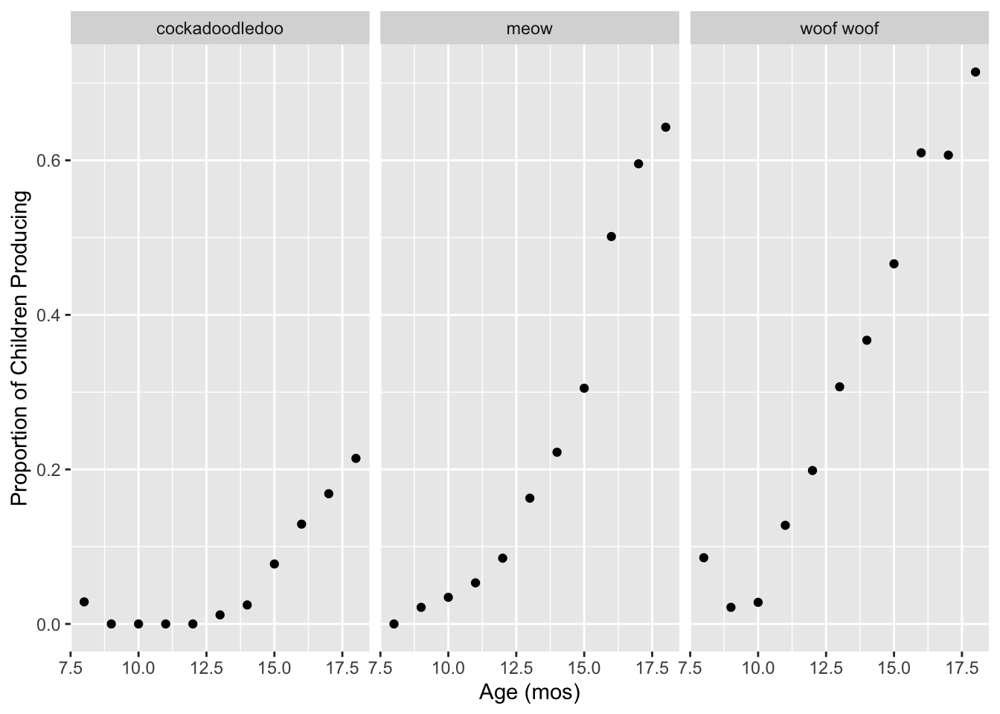
That is a little better! Facets allow us to parse the relationship
between two quantitative variables (here, age and proportion of kids
producing) by a qualitative variable (here, type of sound). Another way
we could do this, instead of faceting, is to use color. This would make
it easier to compare proportions at each age.
Discrete colors
Let’s start with a base plot with age (in months) along the x-axis
and the proportion of children producing each word along the y-axis,
using points as the geometric object. Set the size of the points to 2
and change the x- and y-axis labels to “Age (months)” and “Proportion of
Children Producing”, respectively.
ggplot(sounds, aes(x = age, y = prop_produce)) +
geom_point(size = 2) +
labs(x = "Age (months)", y = "Proportion of Children Producing")
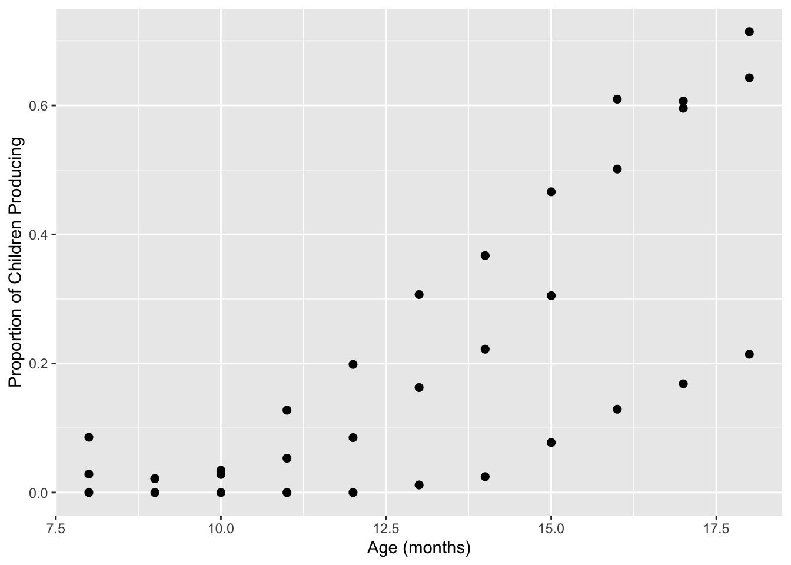
Default discrete
palette
Challenge #2:
Take the plot we just made, and edit the code to map the color of the
points to the type of sound produced at the geom level. The
colors that show up are the default discrete palette in
ggplot2.
ggplot(sounds, aes(x = age, y = prop_produce)) +
geom_point(aes(color = sound), size = 2) +
labs(x = "Age (months)", y = "Proportion of Children Producing")
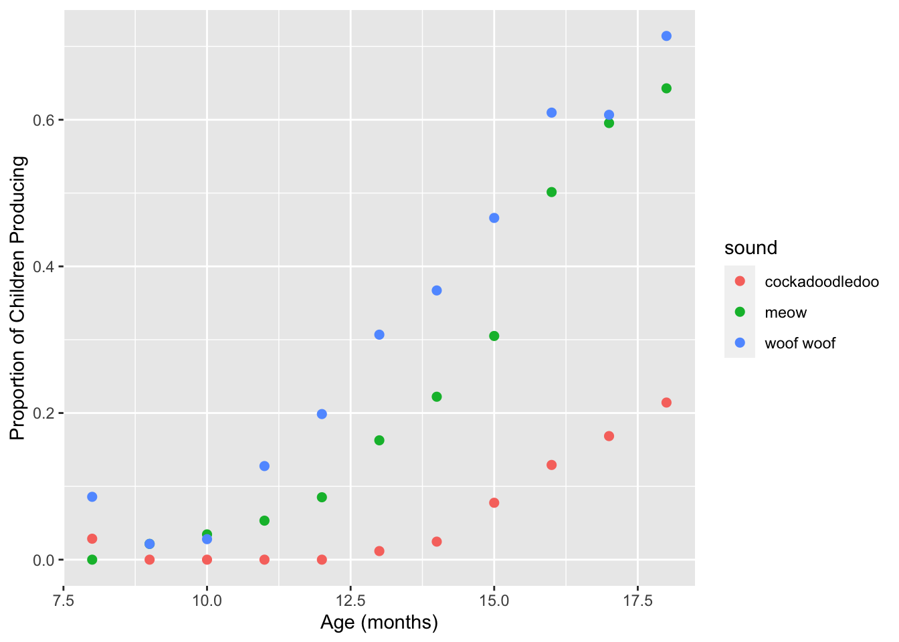
Challenge #3:
Try adding geom_line() to this plot to connect the dots.
Does this look right? Use ?geom_line to figure out how this
geom connects the dots by default, and which aesthetic can be used to
connect cases together. Try editing your code to draw 3 black lines- one
for each sound.
# Does this look right? no!
ggplot(sounds, aes(x = age, y = prop_produce)) +
geom_line() +
geom_point(aes(color = sound), size = 2) +
labs(x = "Age (months)", y = "Proportion of Children Producing")
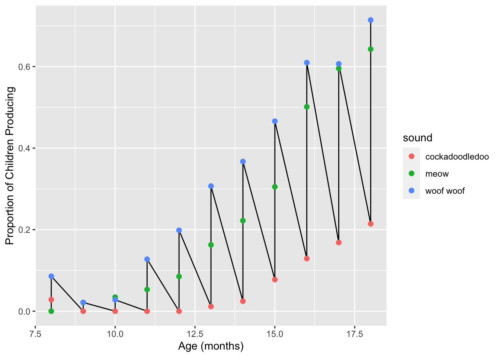
# A possible solution
ggplot(sounds, aes(x = age, y = prop_produce)) +
geom_line(aes(group = sound)) +
geom_point(aes(color = sound), size = 2) +
labs(x = "Age (months)", y = "Proportion of Children Producing")
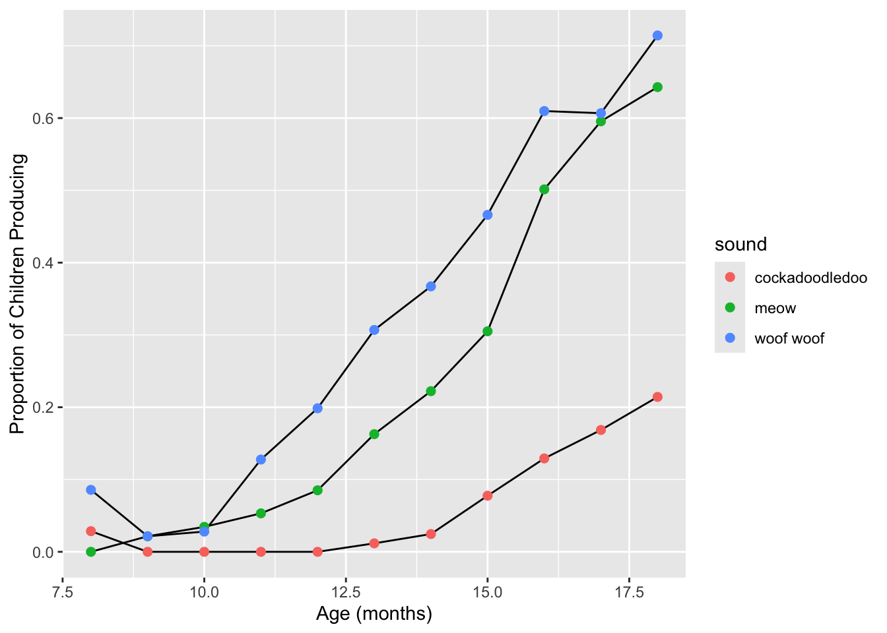
Challenge #4:
Make two plots:
Recreate the plot above, but this time map color to the type of
sound produced for both the point and line geoms. Pay attention to the
order of the layers you are adding- you may wish to place
geom_line before geom_point so the
lines are always “painted” underneath the points.
Instead of geom_line, add a loess line using
geom_smooth. Use ?geom_smooth to figure out
how to get rid of the grey standard error ribbon. You may also want to
increase the line width.
# Does this look right? yes!
ggplot(sounds, aes(x = age, y = prop_produce, color = sound)) +
geom_line() +
geom_point(size = 2) +
labs(x = "Age (months)", y = "Proportion of Children Producing")

ggplot(sounds, aes(x = age,
y = prop_produce,
color = sound)) +
geom_smooth(se = FALSE, lwd = .5) +
geom_point(size = 2) +
labs(x = "Age (months)", y = "Proportion of Children Producing")
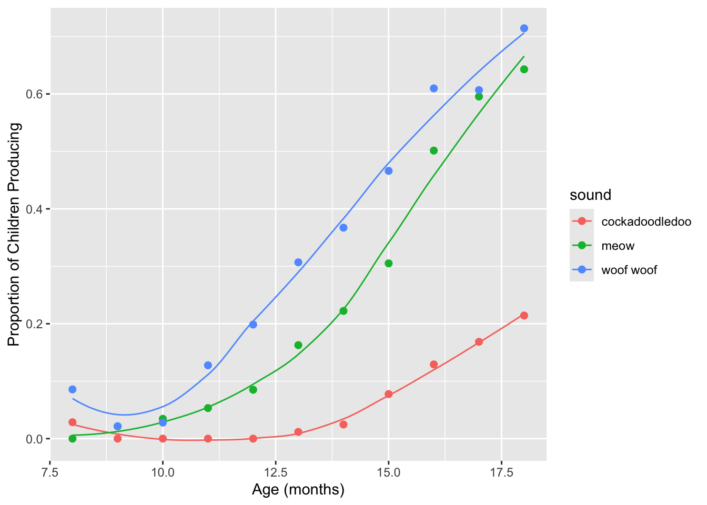
Why does this work? To tell geom_line how to connect
your dots, you can either:
- Map the
group aesthetic (so
aes(group = sound)), or
- Map the
color aesthetic globally
(aes(color = sound).
Because geom_line understands the color
aesthetic, it will try to draw separate lines for each color. Here that
translates to three lines, one for each sound, which is what we
want!
Brief aside:
factors
At this point, our plot is looking pretty good. But you may have
noticed that the legend order doesn’t match the order of the lines in
the plot. Question: why is this an issue?
What determines the order of levels in the legend? The order of
levels in the underlying factor:
levels(as.factor(sounds$sound))
[1] "cockadoodledoo" "meow" "woof woof"
In this case, since we haven’t set them, R will pick an order for
us.
We could manually re-order the levels of the factor, but
different plots might necessitate different factor ordering, and if we
have more than two or three levels, typing them repeatedly gets tedious
fast. Instead, let’s have R do it!
The forcats
package, is for categorical variables and
has lots of useful functions, including some for re-ordering levels.
There are lots of functions in forcats, and you can install
& load it separately, although forcats is loaded with
the tidyverse.
install.packages("forcats")
library(forcats)
We’ll use the fct_reorder2 function, which by default
will re-order the levels of a factor based on the order of occurrence of
one variable (y in the docs) when the dataframe is
sorted by another variable (x in the docs):
# "Sort the dataframe by age, find the last occurrence of each level of sounds$sound in order of prop_produce
fct_reorder2(
as.factor(sounds$sound),
sounds$age, # variable "x"
sounds$prop_produce # varible "y"
) %>% levels
[1] "woof woof" "meow" "cockadoodledoo"
This (somehwat convoluted) procedure is very useful for when you have
a line chart of two quantitative variables, colored by a factor
variable. Let’s see the difference:
sounds <- sounds %>%
mutate(sound = as.factor(sound))
sound_traj <- ggplot(sounds, aes(x = age,
y = prop_produce,
color = fct_reorder2(sound, age, prop_produce))) +
geom_smooth(se = FALSE, lwd = .5) +
geom_point(size = 2) +
labs(x = "Age (months)",
y = "Proportion of Children Producing",
color = "sound")
sound_traj

MUCH BETTER! Save your plot object as sound_traj. Now we
can start playing with the actual colors.
Set luminance and
saturation (chromaticity)
The default qualitative palette works fine here. The addition of scale_color_hue
changes nothing.
sound_traj +
scale_color_hue()

We can also change these settings within the default color palette,
where the arguments are:
h = range of hues to use, in [0, 360]l = luminance (lightness)c = chroma (intensity of color)
# Change hue (l and c are defaults)
sound_traj +
scale_color_hue(h = c(0, 90), l = 65, c = 100)
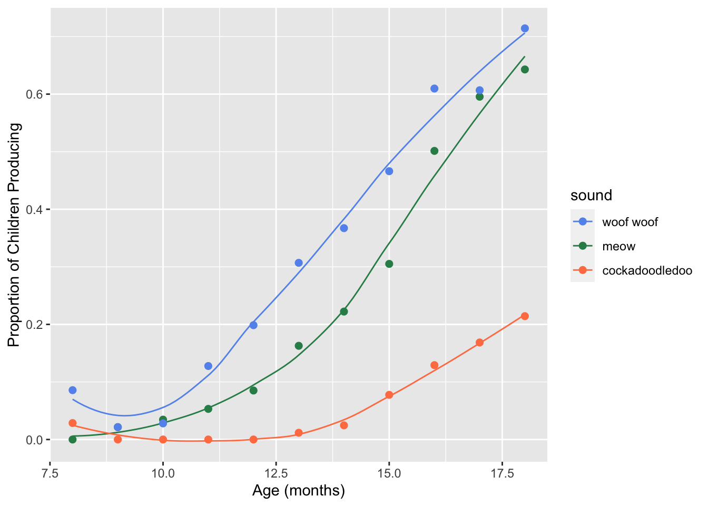
# Use luminance=45, instead of default 65
sound_traj +
scale_color_hue(l = 45)
# Reduce saturation (chroma) from 100 to 50, and increase luminance
sound_traj +
scale_color_hue(l = 75, c = 50)
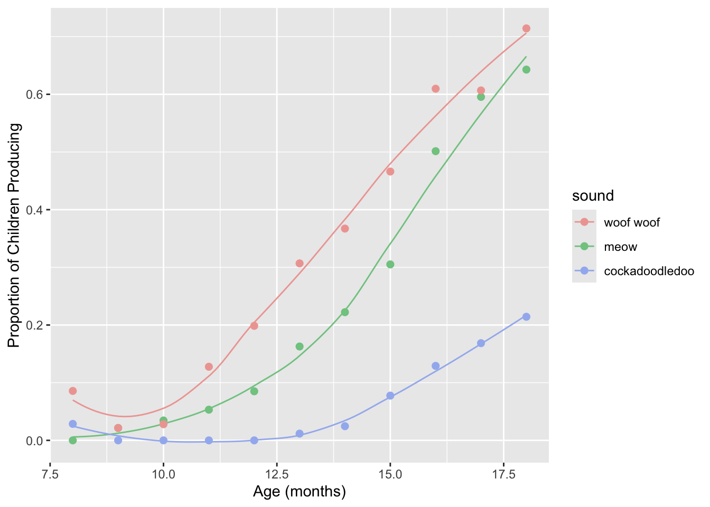
Set discrete
colors
We can change the actual colors used by adding the layer
scale_color_manual or scale_fill_manual.
Confusion between which to use when is often the cause of much
frustration!
To name more than one color, which you often want to do, use
c(). In the parentheses, named colors and hex colors are
always in quotes.
sound_traj +
scale_color_manual(values = c("cornflowerblue",
"seagreen", "coral"))
There are many named
colors available in R!
Challenge #5:
View the code blocks below. Copy and paste the code to run them in
your own file. Why do neither of the following code blocks change the
colors of the points and lines? Use your words :) (the answer is
below the challenge, but try to trouble-shoot on your own
first)
ggplot(sounds, aes(x = age,
y = prop_produce,
color = fct_reorder2(sound, age, prop_produce))) +
geom_smooth(se = FALSE, lwd = .5) +
geom_point(size = 2) +
labs(x = "Age (months)",
y = "Proportion of Children Producing",
color = "sound") +
scale_fill_manual(values = c("cornflowerblue",
"seagreen", "coral"))
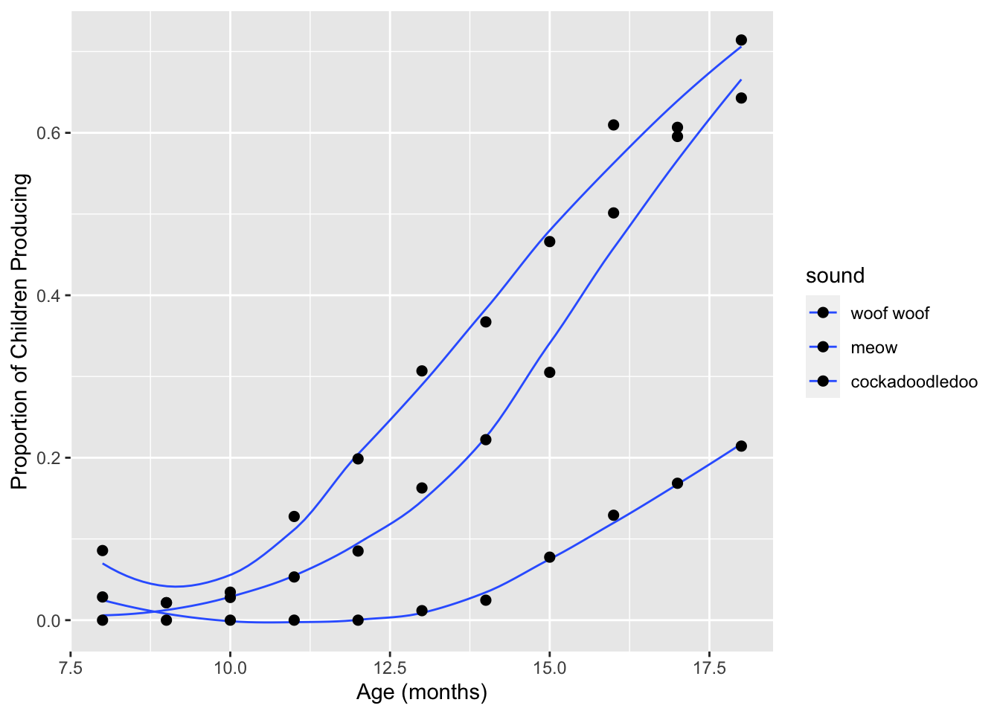
ggplot(sounds, aes(x = age,
y = prop_produce,
fill = fct_reorder2(sound, age, prop_produce))) +
geom_smooth(se = FALSE, lwd = .5) +
geom_point(size = 2) +
labs(x = "Age (months)",
y = "Proportion of Children Producing",
fill = "sound") +
scale_fill_manual(values = c("cornflowerblue",
"seagreen", "coral"))
Answers:
- In the first, we used
scale_fill_manual, but the in the
global aesthetics, we mapped the color, not
fill, aesthetic onto the sound variable.
- In the second, we did define the
fill aesthetic and
used scale_fill_manual, so that is good. But
geom_line only understands the color
aesthetic, not fill. And for geom_point, the
default shape for is 19, which does not understand the fill
aesthetic.
Challenge #6:
Start with this plot:
sound_traj
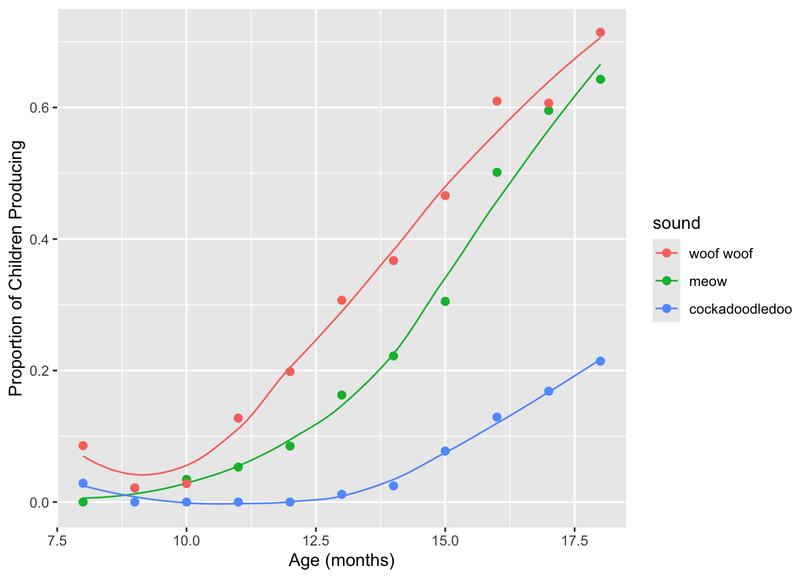
Add a black outline to the points, and color the inside of the points
and the lines by sound using the default discrete color
palette. You may also wish to edit the legends on this plot:
geom_smooth has an argument called
show.legend = FALSE. See if you prefer the plot with this
change.
If this was easy, try applying the same custom color palette to the
inside of the points and to the lines.
ggplot(sounds, aes(x = age,
y = prop_produce,
fill = fct_reorder2(sound, age, prop_produce))) +
geom_smooth(aes(color = fct_reorder2(sound, age, prop_produce)),
se = FALSE, lwd = .5, show.legend = FALSE) +
geom_point(size = 2, shape = 21) +
labs(x = "Age (months)",
y = "Proportion of Children Producing",
fill = "sound")
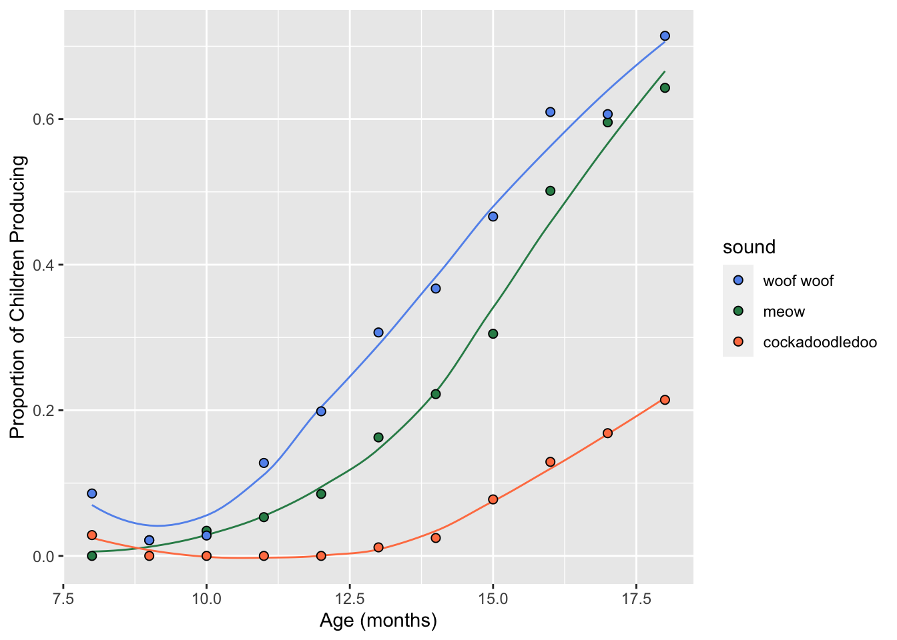
ggplot(sounds, aes(x = age,
y = prop_produce,
fill = fct_reorder2(sound, age, prop_produce))) +
geom_smooth(aes(color = fct_reorder2(sound, age, prop_produce)),
se = FALSE, lwd = .5, show.legend = FALSE) +
geom_point(size = 2, shape = 21) +
labs(x = "Age (months)",
y = "Proportion of Children Producing",
fill = "sound") +
scale_fill_manual(values = c("cornflowerblue",
"seagreen", "coral")) +
scale_color_manual(values = c("cornflowerblue",
"seagreen", "coral"))
You can also define your color palette as a vector outside of
ggplot2. Below, I made an object called
my_colors outside of ggplot2. To use it, we
call that object within the scale_colour_manual
function.
my_colors <- c("cadetblue", "steelblue", "salmon") # quote color names
sound_traj +
scale_color_manual(values = my_colors) # note: not in quotes
Challenge #7:
Define a custom color palette using hexadecimal colors (#rrggbb), and
apply it using scale_color_manual to your
sound_traj plot. Some basic ones are here:
https://sashat.me/2017/01/11/list-of-20-simple-distinct-colors/
Parse the hexadecimal string like so: #rrggbb, where rr, gg, and bb
refer to color intensity in the red, green, and blue channels,
respectively.
# from https://github.com/mwaskom/seaborn/blob/master/seaborn/palettes.py
sb_colorblind <- c("#0072B2", "#009E73", "#D55E00",
"#CC79A7", "#F0E442", "#56B4E9")
sound_traj +
scale_colour_manual(values = sb_colorblind)
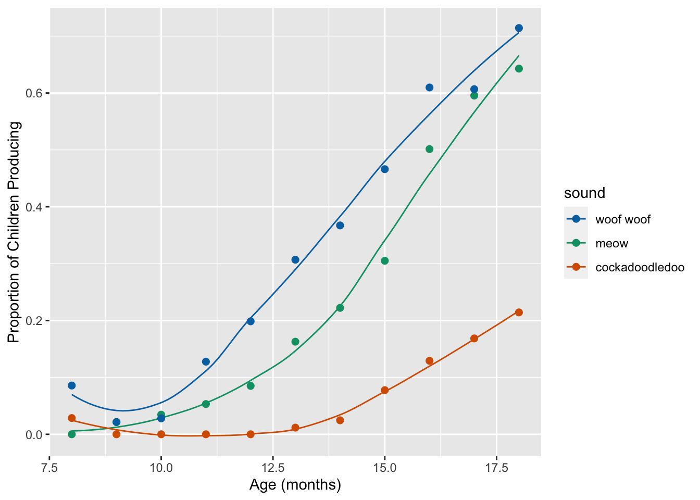
Built-in discrete
palettes
Colorbrewer
As we discussed on Monday, Colorbrewer is a useful tool for
designing color palettes, which can be used directly in R.
To use Colorbrewer palettes, you’ll need to install the
RColorBrewer package from CRAN. This chunk of code tells
you how:
install.packages("RColorBrewer")
library(RColorBrewer)
Colorbrewer has a few named (i.e., pre-set) qualitative
palettes: Accent, Dark2, Paired, Pastel1, Pastel2, Set1, Set2, Set3.
Here is how to view them:
brewer.pal(5, "Dark2") # list 5 hex colors
[1] "#1B9E77" "#D95F02" "#7570B3" "#E7298A" "#66A61E"
display.brewer.pal(5, "Dark2") # view 5 hex colors
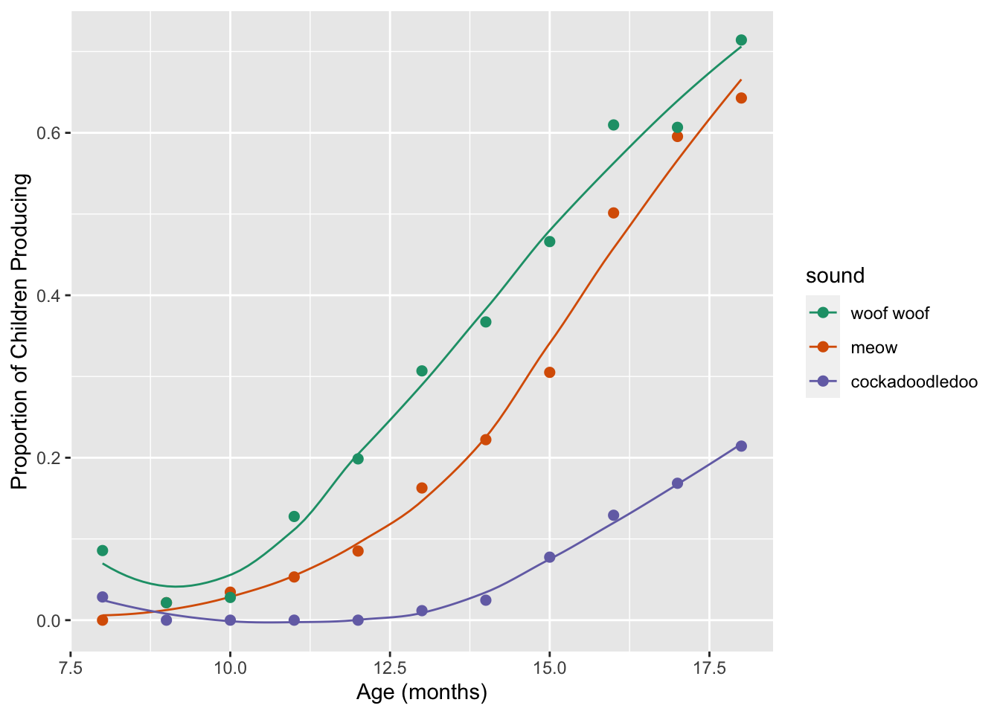
And here is how you use them:
sound_traj +
scale_color_brewer(palette = "Dark2")
Viridis
palettes
ggplot comes built-in with the “Viridis” color palette,
the point of which is to be a set of colors that “are pretty, better
represent your data, easier to read by those with colorblindness, and
print well in grey scale.”
Read more here in the viridis
vignette. Note that this vignette is for an R package that is
generally no longer needed with recent versions of ggplot- the Viridis
color palette didn’t used to be part of ggplot by default,
but it does now! 🎉 There are Viridis four colormap options
available:
- “magma” (or “A”),
- “inferno” (or “B”),
- “plasma” (or “C”),
- “viridis” (or “D”, the default option).
sound_traj +
scale_color_viridis_d() +
theme_minimal()
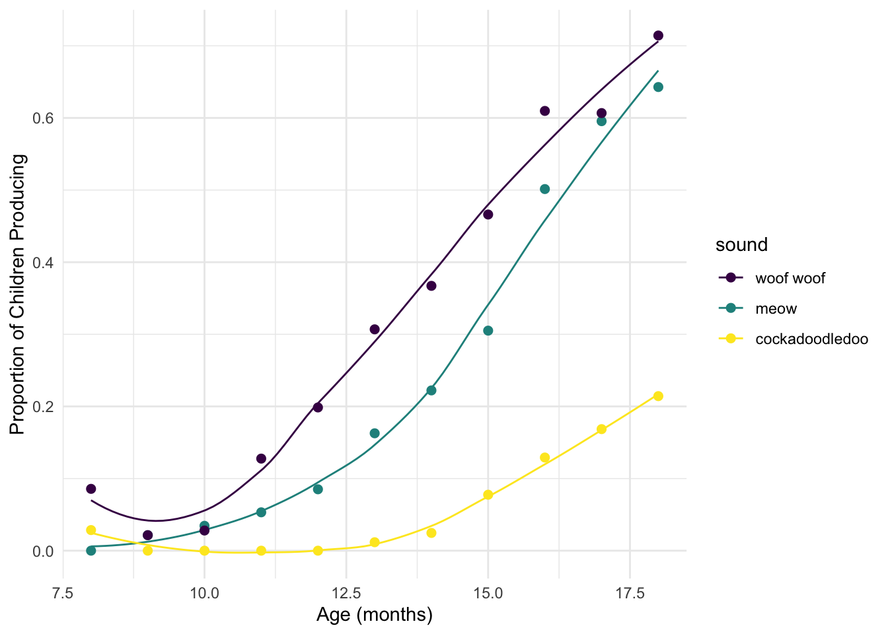
sound_traj +
scale_color_viridis_d(option = "plasma") +
theme_minimal()

Challenge #8:
Use the Viridis palettes to color the points by and the lines by
sound; make the outline of the points “midnightblue”. Pick
any colormap option, and play with theme_bw or
theme_minimal to see what you like.
ggplot(sounds, aes(x = age,
y = prop_produce,
fill = fct_reorder2(sound, age, prop_produce))) +
geom_smooth(aes(color = fct_reorder2(sound, age, prop_produce)),
se = FALSE, lwd = .5, show.legend = FALSE) +
geom_point(size = 2, shape = 21, colour = "midnightblue") +
labs(x = "Age (months)",
y = "Proportion of Children Producing",
fill = "sound") +
scale_fill_viridis_d() +
scale_color_viridis_d() +
theme_minimal()

A note: the default Viridis discrete palette ends up in a pretty
gnarly yellow color that I personally feel like is not ideal for all
situations. In practice, I have been known to artificially clamp the
range of the Viridis discrete palette to avoid that last color.
Color Palettes from
Packages
As with everything else in R, there are numerous homebrew
packages with different color palettes. Here, we will meet a few of my
favs.
Wes Anderson
palettes
My favorite! To use Wes Anderson palettes, you’ll need to install the
wesanderson package from CRAN. This chunk of code tells you
how:
install.packages("wesanderson")
library(wesanderson)
names(wes_palettes) # all the palette names
[1] "BottleRocket1" "BottleRocket2" "Rushmore1"
[4] "Rushmore" "Royal1" "Royal2"
[7] "Zissou1" "Zissou1Continuous" "Darjeeling1"
[10] "Darjeeling2" "Chevalier1" "FantasticFox1"
[13] "Moonrise1" "Moonrise2" "Moonrise3"
[16] "Cavalcanti1" "GrandBudapest1" "GrandBudapest2"
[19] "IsleofDogs1" "IsleofDogs2" "FrenchDispatch"
[22] "AsteroidCity1" "AsteroidCity2" "AsteroidCity3"
wes_palette("GrandBudapest2") # view named palette
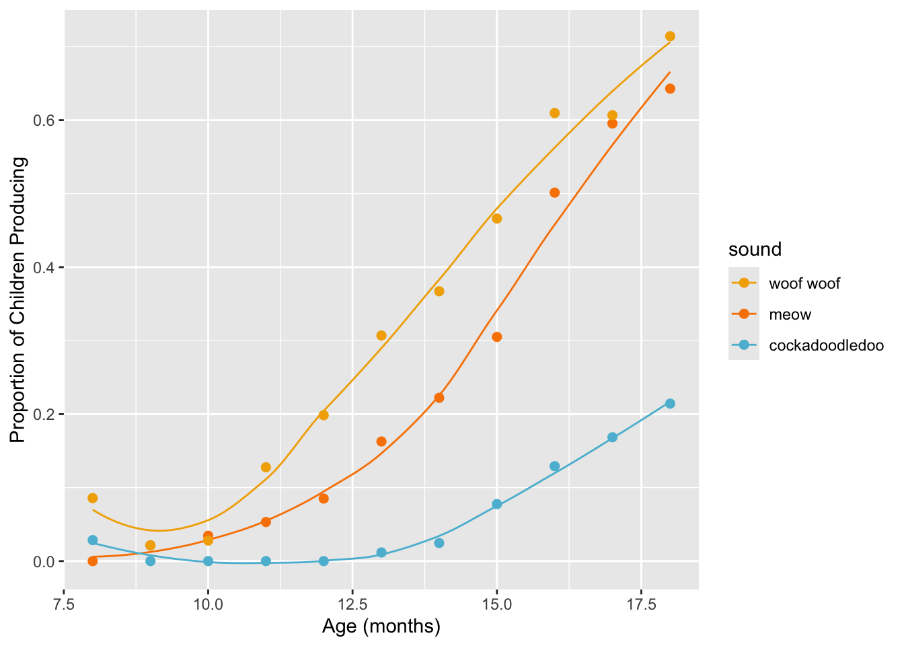
wes_palette("GrandBudapest2")[1:4] # list first 4 hex colors
[1] "#E6A0C4" "#C6CDF7" "#D8A499" "#7294D4"
wes_palette("GrandBudapest2")[c(1,4)] # list colors 1 and 4
[1] "#E6A0C4" "#7294D4"
To use these palettes, use scale_color_manual where
values is set to wes_palette("name"). For
example:
sound_traj +
scale_color_manual(values = wes_palette("Darjeeling1"))
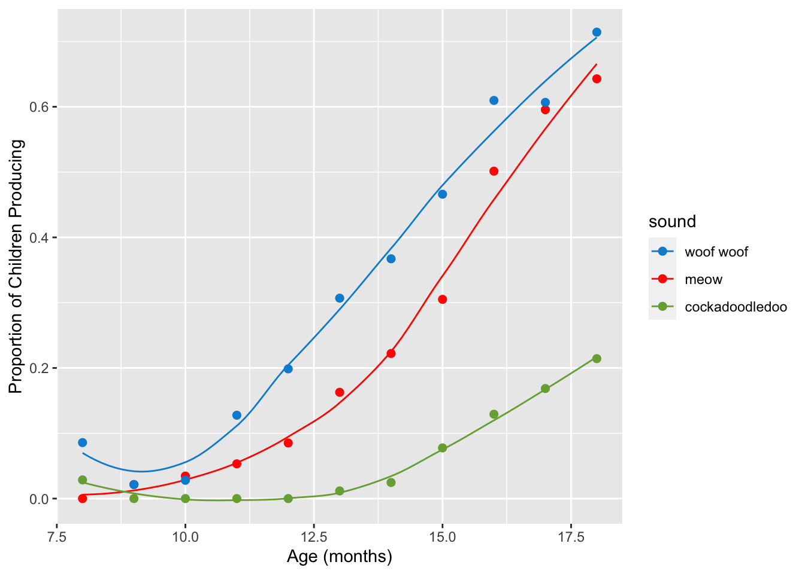
sound_traj +
scale_color_manual(values = wes_palette("FantasticFox1"))

Challenge #8:
What if you just don’t want to use the colors in the order they are
in? Use a wes_palette of your choice. Using our code from
above, try picking the last 3 colors of a palette. Add it to your
sound_traj plot.
If this was easy, try using colors 2, 3, and 5 instead.
sound_traj +
scale_color_manual(values = wes_palette("Darjeeling1")[3:5])
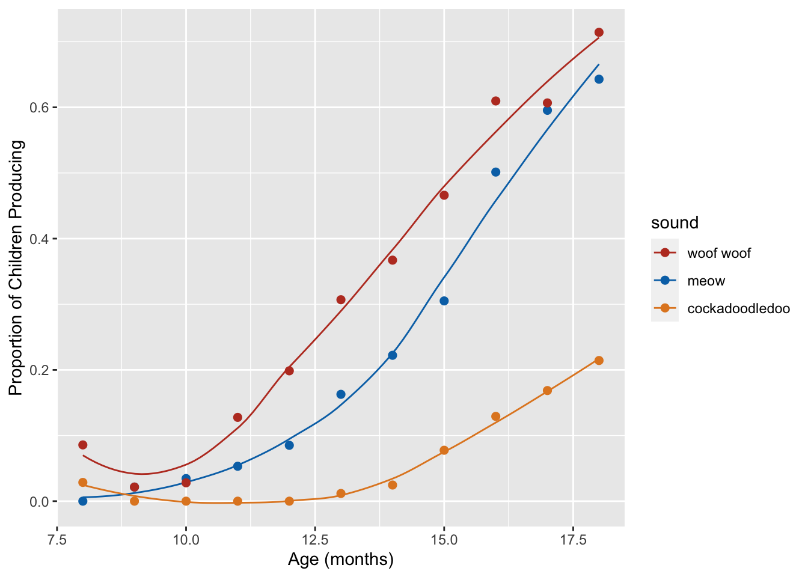
sound_traj +
scale_color_manual(values = wes_palette("FantasticFox1")[c(2, 3, 5)])
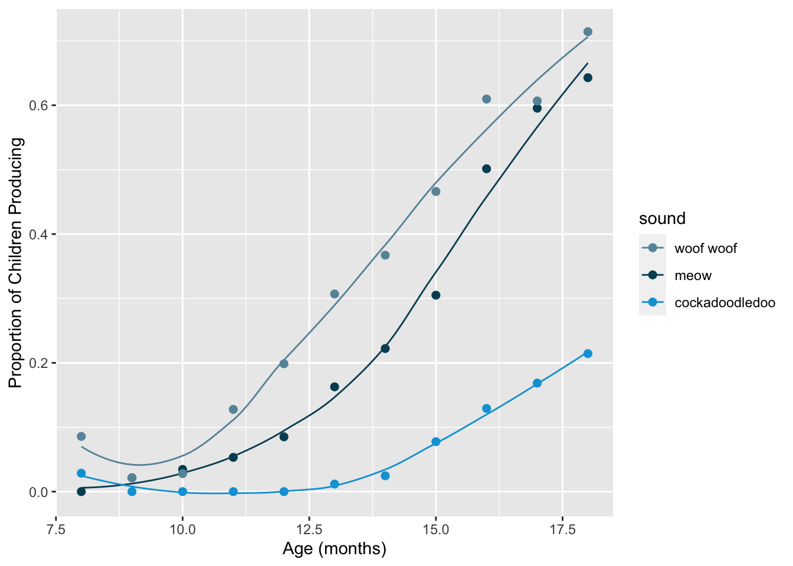
In The Wild
I recently used one of the Wes Anderson palettes (“AsteroidCity1”) in
one of my own figures!
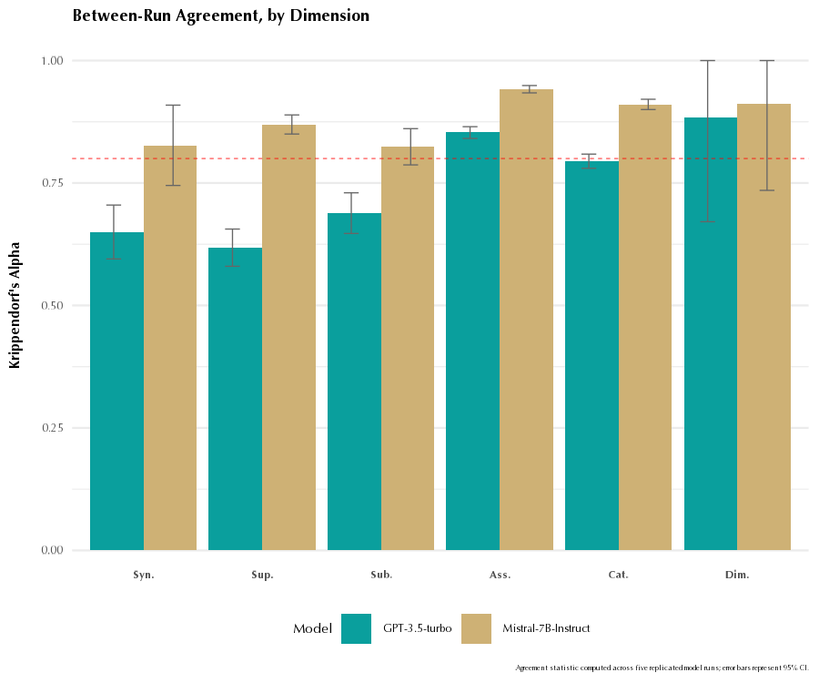
Asteroid City In The Wild
Also great: Studio
Ghibli!
Another fun choice: The Studio Ghibli color
palettes!
sound_traj +
scale_colour_ghibli_d("YesterdayMedium", direction = -1)
Why do we need that direction = -1 business? To answer,
let’s try running this with the default color ordering:
sound_traj +
scale_colour_ghibli_d("YesterdayMedium", direction = 1)
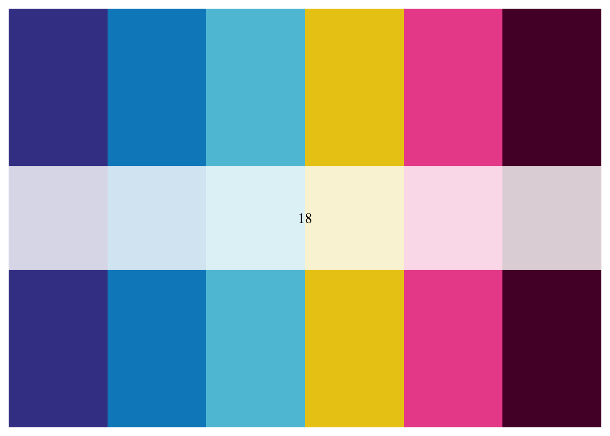
Those all look indistinguishable; why is this happening? Let’s look
at the colors in the palette:
ghibli_palette("YesterdayMedium")
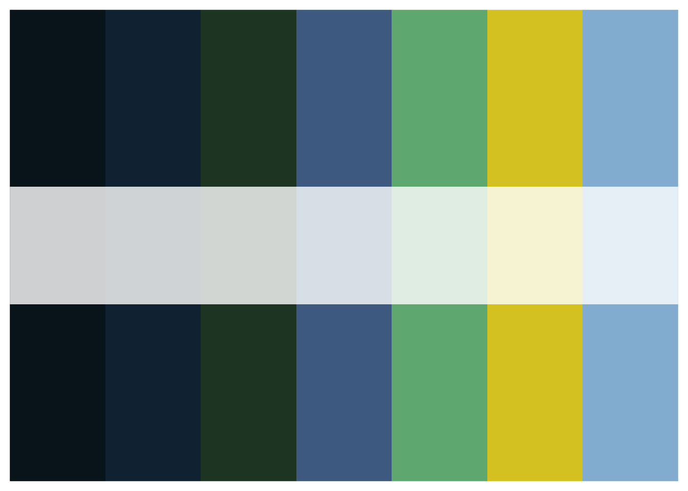
We see that the first few colors are very dark; on a grey background,
with small lines, those colors look very similar to one another. So
similar that, at first, it looks like they are all the same! To prove
that we are actually pulling in those colors, let’s artificially (and
temporarily!) increase our point size:
sound_traj +
geom_point(size = 20) +
scale_colour_ghibli_d("YesterdayMedium", direction = 1)
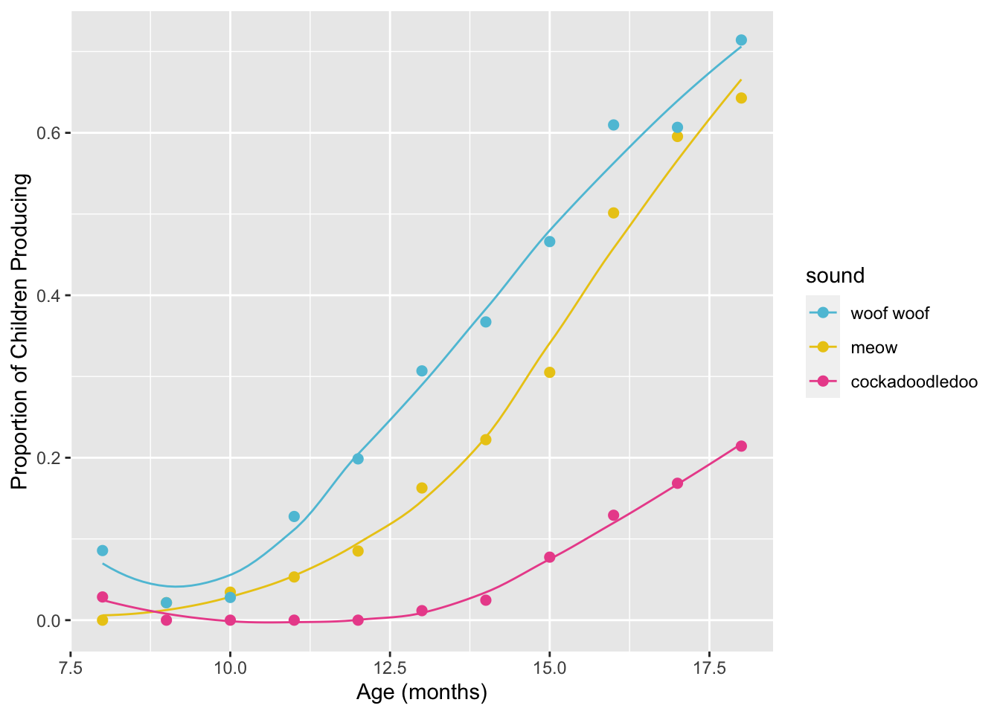
We can see that indeed, the colors from the palette are being used,
but that they are too similar to be a good choice for this plot. Hence,
swapping the normal order of the colors using the direction
argument.
ggthemes palettes
To use these palettes, you’ll need to install the
ggthemes package from CRAN. This chunk of code tells you
how:
install.packages("ggthemes")
library(ggthemes)
sound_traj +
scale_color_fivethirtyeight()

sound_traj +
scale_color_economist()
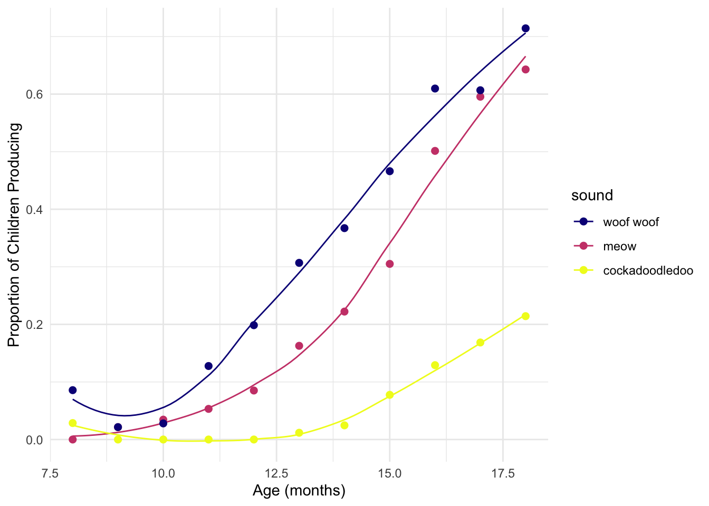
ggsci
Palettes
ggsci provides
color palettes designed to match with the aesthetics of a wide variety
of scientific publishers:
library(ggsci)
sound_traj + scale_color_nejm()
Palettes from the
Queen Bee
To use Beyonce
palettes, you’ll need to install the beyonce package
from GitHub using devtools::install_github(). This chunk of
code tells you how:
# install.packages("devtools")
# devtools::install_github("dill/beyonce")
library(beyonce)
Note that a number of students had installation problems with this
package! Move on if you do.
beyonce_palette(18)
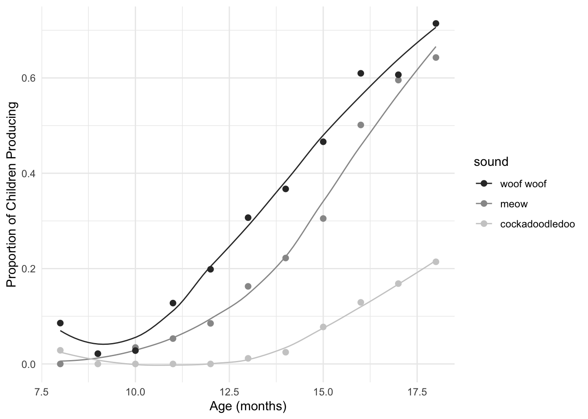
sound_traj +
scale_color_manual(values = beyonce_palette(18)[3:5])
Here we’ll only use the first, fourth, and fifth colors in the
palette.
sound_traj +
scale_color_manual(values = beyonce_palette(18)[c(1, 4, 5)])
Going Greyscale for
Discrete
Use scale_color_grey or scale_fill_grey, or
sometimes both depending on your geoms and the aesthetics they
understand.
sound_traj +
scale_color_grey() +
theme_minimal()
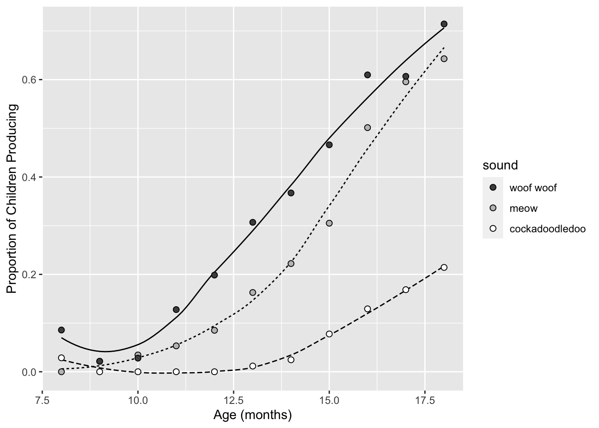
Set start and end
sound_traj +
scale_color_grey(start = 0.2, end = .8)
Make the same plot but make points outlined in black
ggplot(sounds, aes(x = age,
y = prop_produce,
fill = fct_reorder2(sound, age, prop_produce))) +
geom_smooth(aes(color = fct_reorder2(sound, age, prop_produce)),
se = FALSE, lwd = .5, show.legend = FALSE) +
geom_point(size = 2, shape = 21) +
labs(x = "Age (months)",
y = "Proportion of Children Producing",
fill = "sound") +
scale_fill_grey(start = 0.3, end = 1) +
scale_color_grey(start = 0.3, end = 1)
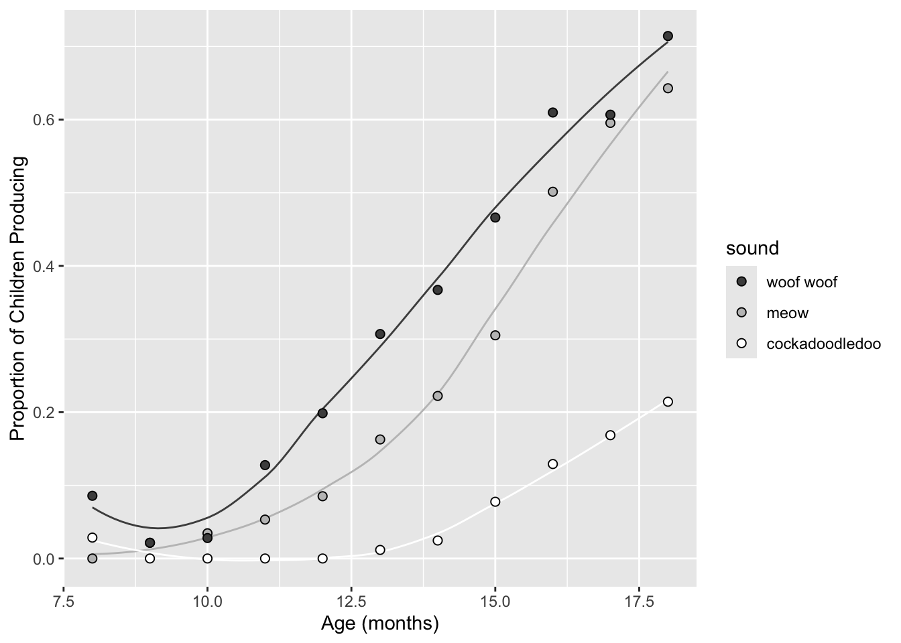
Suggest redundancy in greyscale- try changing line type instead of
line (or in addition to) line color.
Change line type by sound, set color to black.
ggplot(sounds, aes(x = age,
y = prop_produce,
fill = fct_reorder2(sound, age, prop_produce))) +
geom_smooth(aes(lty = fct_reorder2(sound, age, prop_produce)), color = "black",
se = FALSE, lwd = .5, show.legend = FALSE) +
geom_point(size = 2, shape = 21) +
labs(x = "Age (months)",
y = "Proportion of Children Producing",
fill = "sound") +
scale_fill_grey(start = 0.3, end = 1)
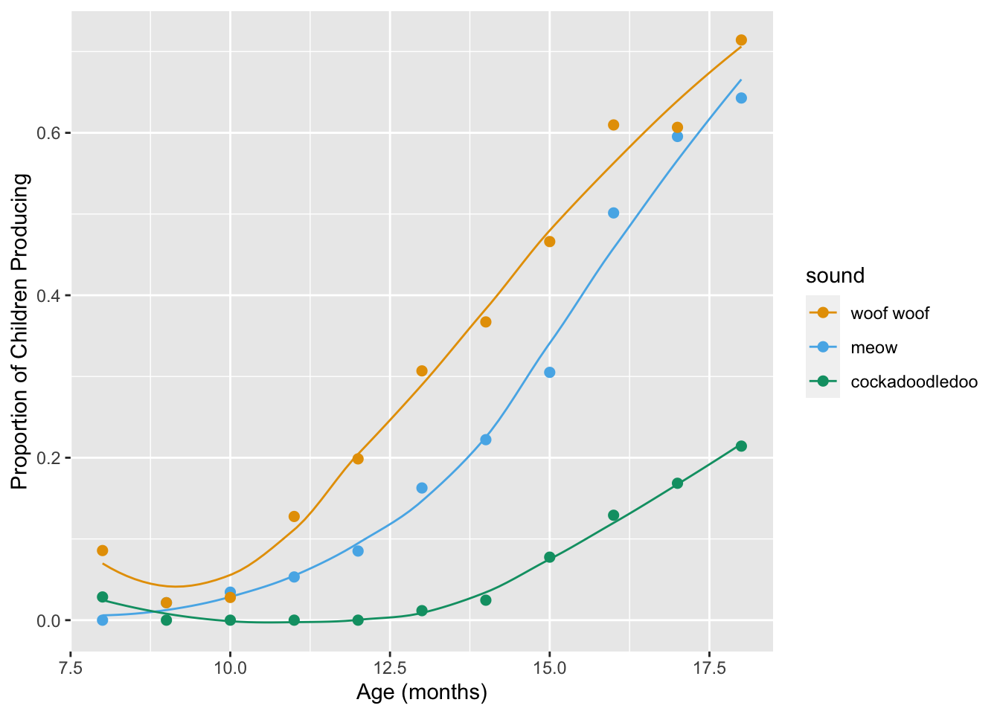
Change both!
ggplot(sounds, aes(x = age,
y = prop_produce,
fill = fct_reorder2(sound, age, prop_produce))) +
geom_smooth(aes(color = fct_reorder2(sound, age, prop_produce),
lty = fct_reorder2(sound, age, prop_produce)),
se = FALSE, lwd = .5, show.legend = FALSE) +
geom_point(size = 2, shape = 21) +
labs(x = "Age (months)",
y = "Proportion of Children Producing",
fill = "sound") +
scale_fill_grey(start = 0.3, end = .8) +
scale_color_grey(start = 0.3, end = .8)
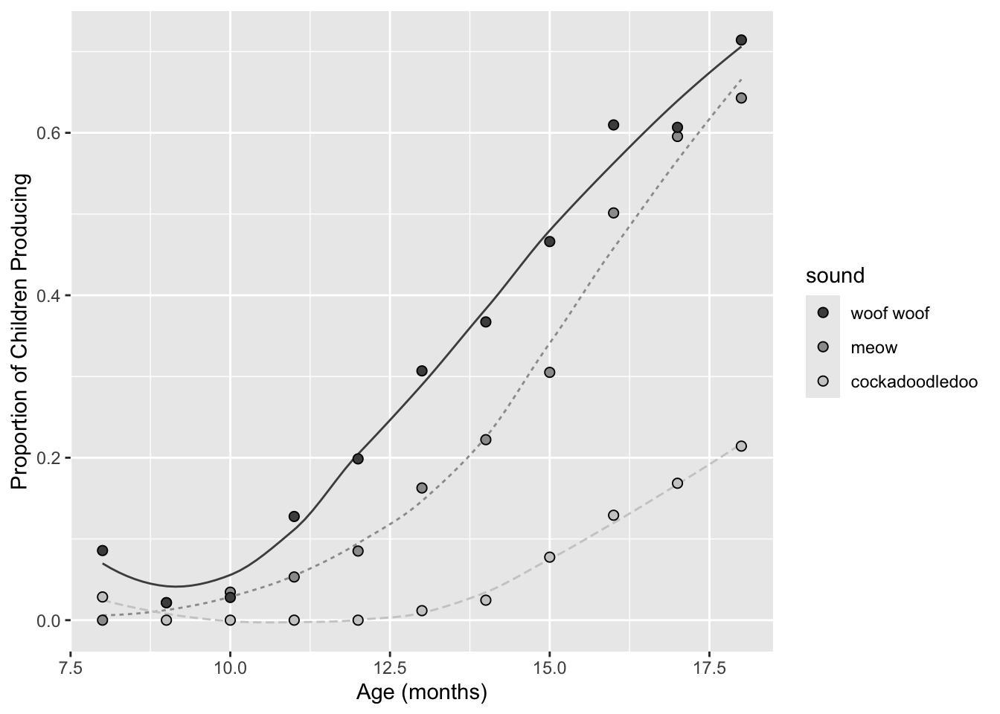
Colorblind-friendly
palettes
The colorblindr
package can be used to “simulate colorblindness in production-ready
R figures.” To use this package, you’ll need to first install the
cowplot package from GitHub using
devtools::install_github(). You’ll also need to install the
colorspace package from CRAN. Finally, you can then use
devtools::install_github() again to install the
colorblindr package. This code chunk shows you how to do
all 3 installs to use the colorblindr package:
devtools::install_github("wilkelab/cowplot")
install.packages("colorspace", repos = "http://R-Forge.R-project.org")
devtools::install_github("clauswilke/colorblindr")
To use:
# save a ggplot object
my_sound_traj <- sound_traj +
scale_color_manual(values = beyonce_palette(18)[c(1, 4, 5)])
View that figure after color-vision-deficiency simulation:
library(colorblindr)
cvd_grid(my_sound_traj)
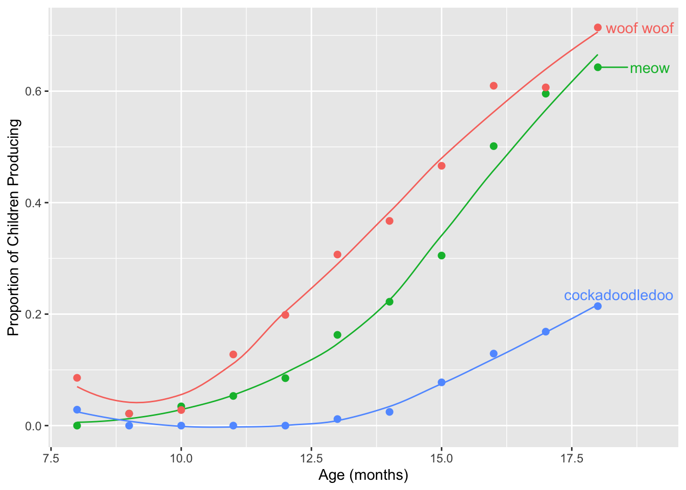
You can also use the colorblind-friendly palette in this package
using scale_color_OkabeIto and
scale_fill_OkabeIto:
cb_sound_traj <- sound_traj +
scale_color_OkabeIto()
cb_sound_traj
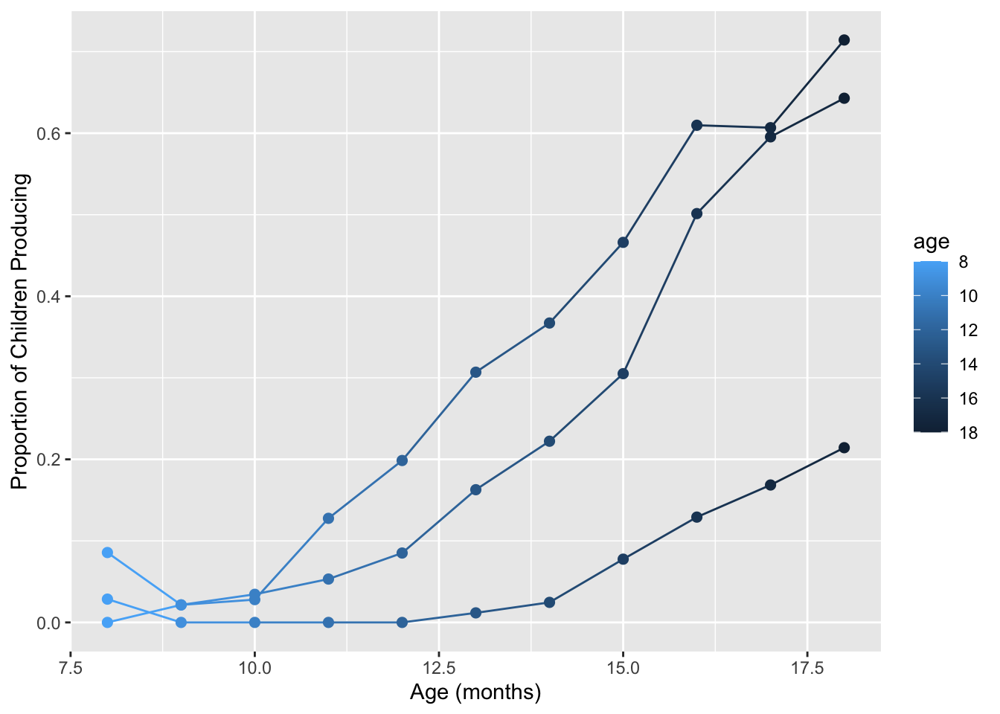
cvd_grid(cb_sound_traj)

You can still use this colorblind-friendly palette without the
colorblindr package though. Here are the colors!

The Cookbook
for R provided the matching hex colors too to make life easier:
cbbPalette <- c("#000000", "#E69F00", "#56B4E9", "#009E73", "#F0E442", "#0072B2", "#D55E00", "#CC79A7")
# To use for line and point colors, add
sound_traj +
scale_colour_manual(values = cbbPalette[c(3, 7, 8)])
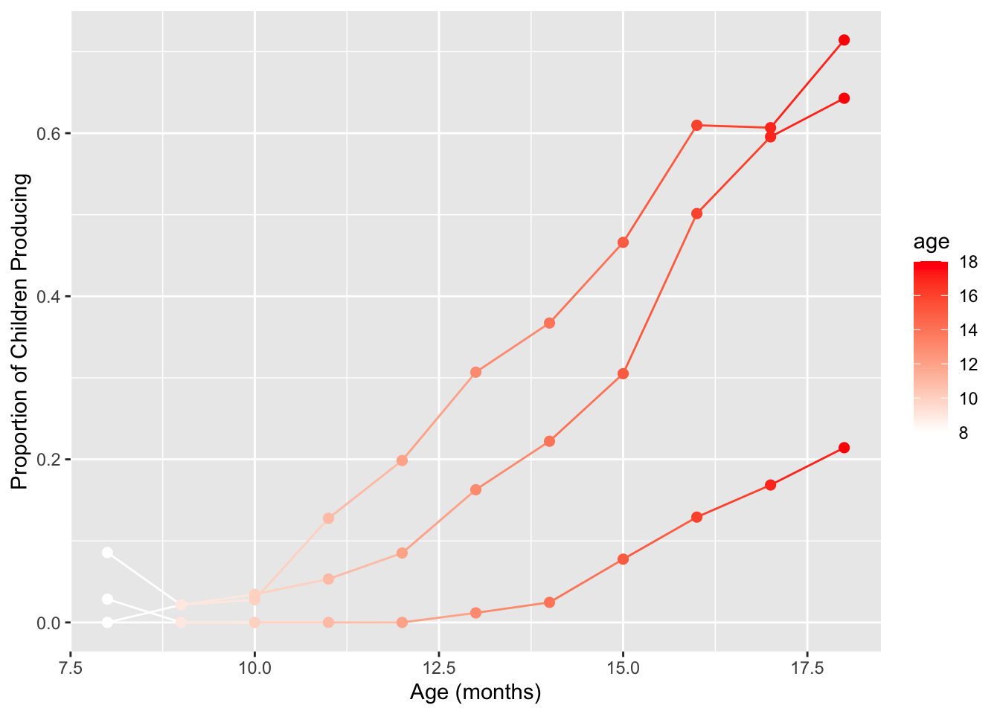
Labels
When working with colors, the default pattern, enforced by
ggplot, is to use a figure legend to indicate which color
goes with which level of a factor. However, this is not always the best
way to go! Another option is to directly label your data within the plot
itself. When should you consider this option?
- When you have a very small number of levels
- When the design of the rest of the plot is amenable: there aren’t
too many other annotations or visual elements taking up space.
There are several ways to do this, but a good place to start is
ggrepel:
library(ggrepel)
sounds <- sounds %>%
mutate(label = case_when(
age == max(age) ~ sound))
ggplot(sounds, aes(x = age,
y = prop_produce,
color = fct_reorder2(sound, age, prop_produce))) +
geom_smooth(se = FALSE, lwd = .5) +
geom_point(size = 2) +
labs(x = "Age (months)",
y = "Proportion of Children Producing") +
geom_text_repel(aes(label = label),
nudge_x = 1,
direction = "y",
na.rm = TRUE) +
guides(color = FALSE)
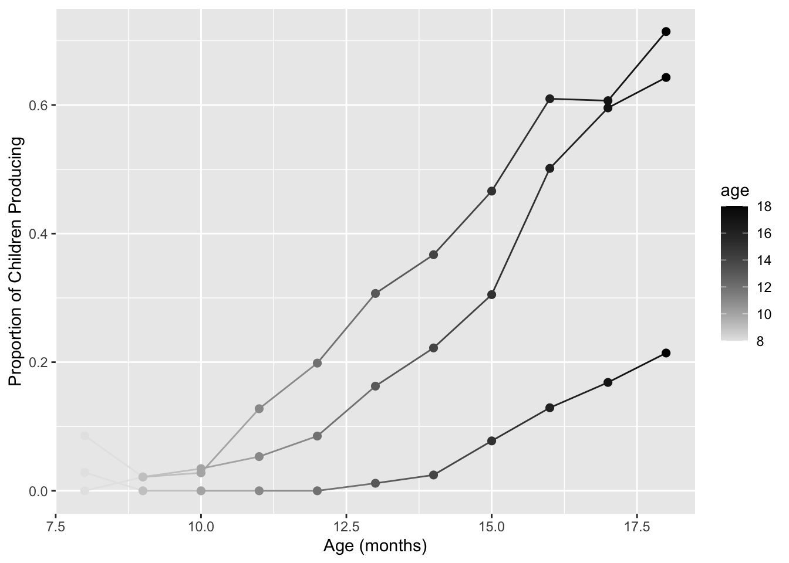
Continuous colors
N.B. All of the example plots below are great examples of how
not to use continuous colors. I’m showing these so you
can see how to work with continuous color palettes, and to make this
topic flow easier for you I’m sticking with original dataset.
Default continuous
palette
Let’s map color to a continuous variable. For this, we are returning
to geom_line instead of geom_smooth, because
the latter doesn’t respond to continuous color palettes.
sound_by_age <- ggplot(sounds, aes(x = age,
y = prop_produce,
color = age)) +
geom_line(aes(group = sound), lwd = .5) +
geom_point(size = 2) +
labs(x = "Age (months)",
y = "Proportion of Children Producing")
sound_by_age
Color choice with
continuous variables
With discrete colors, we used either scale_color_manual
or scale_fill_manual (and sometimes both were needed!). For
continuous colors, we use either scale_color_gradient or
scale_fill_gradient.
sound_by_age +
scale_color_gradient()
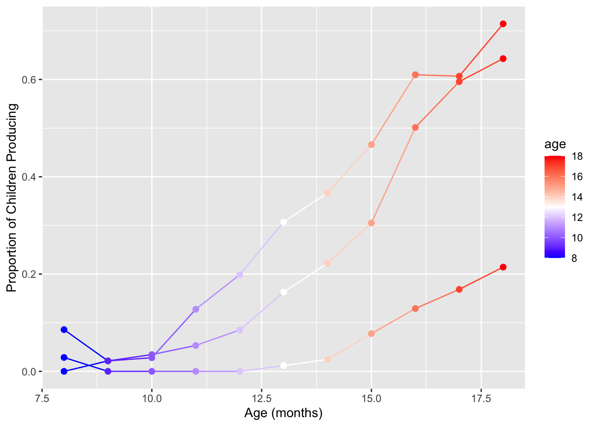
You can reverse the gradient scale…
sound_by_age +
scale_color_gradient(trans = "reverse")
sound_by_age +
scale_color_gradient(low = "white", high = "red")
We can make this same plot using a custom greyscale gradient.
sound_by_age +
scale_color_gradient(low = "grey90", high = "black")
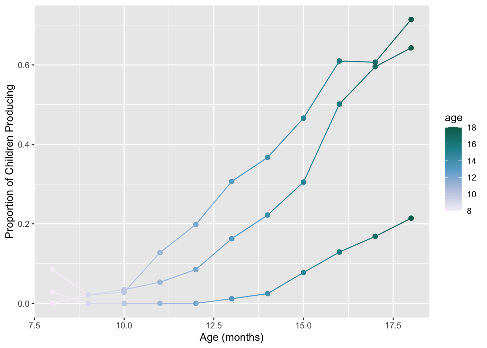
So scale_color_gradient gives you a sequential gradient,
but you may want a diverging color scheme instead. For that, you can use
scale_color_gradient2
# Diverging color scheme
med_age <- sounds %>%
summarize(mos = median(age)) %>%
pull()
sound_by_age +
scale_color_gradient2(midpoint = med_age,
low="blue", mid="white", high="red" )
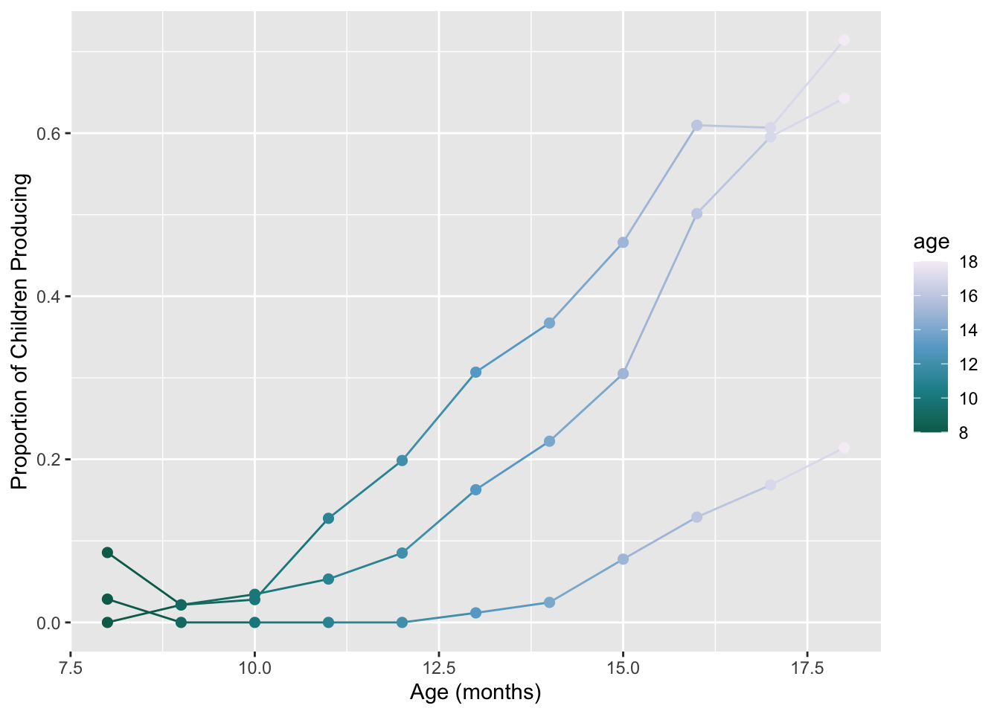
Built-in continuous
palettes
Use
RColorBrewer
Again, to use you need to install and load the
RColorBrewer palette.
library(RColorBrewer)
Then use scale_color_gradientn.
sound_by_age +
scale_color_gradientn(colours = brewer.pal(n=5, name="PuBuGn"))
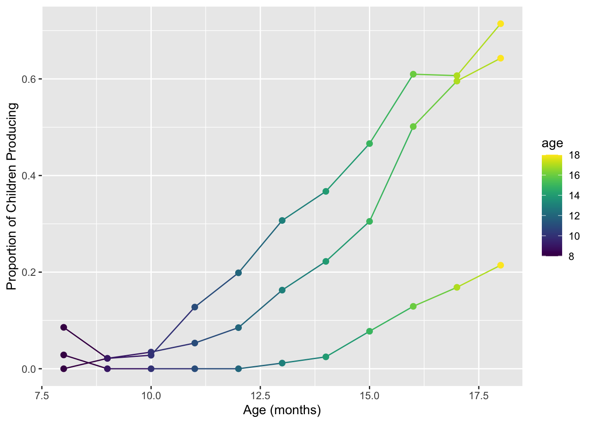
Reverse the colors…
sound_by_age +
scale_color_gradientn(colours = rev(brewer.pal(n=5, name="PuBuGn")))
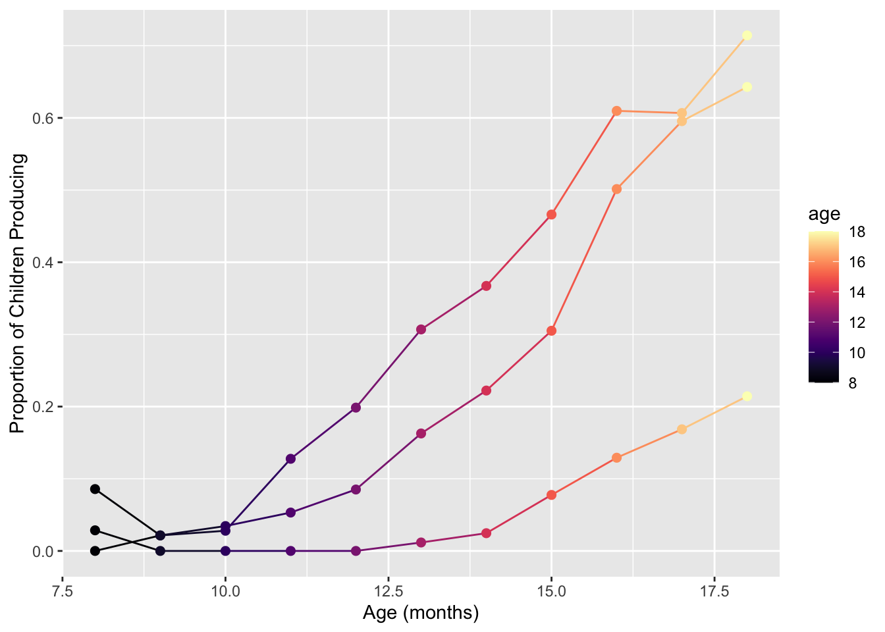
Viridis
Read more here in the viridis
vignette
library(viridis)
The default is the viridis palette within the
viridis package!
Note! For discrete == FALSE (the default) all other arguments are as
to scale_fill_gradientn or
scale_color_gradientn. (Also note that
_gradient_n_ is not a typo- the n versions of
those functions allow multi-color gradients).
sound_by_age +
scale_color_viridis()
Error in scale_color_viridis(): could not find function "scale_color_viridis"
sound_by_age +
scale_color_viridis(option = "magma")
Error in scale_color_viridis(option = "magma"): could not find function "scale_color_viridis"
Read the help function for ?scale_color_viridis. We’ll
use the “inferno” palette in reverse.
sound_by_age +
scale_color_viridis(option = "inferno", begin = 1, end = 0)
Error in scale_color_viridis(option = "inferno", begin = 1, end = 0): could not find function "scale_color_viridis"
